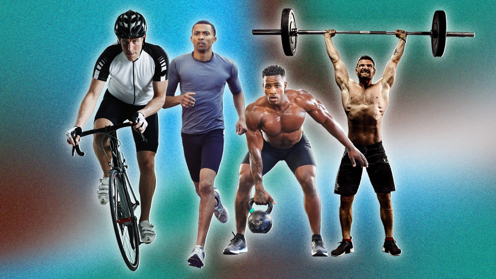
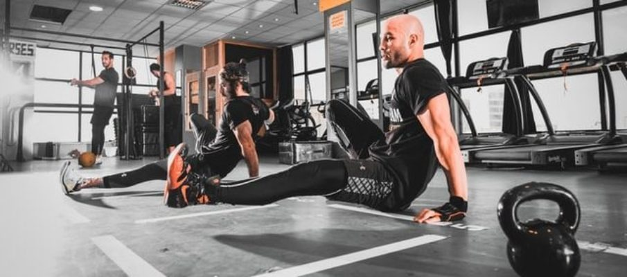
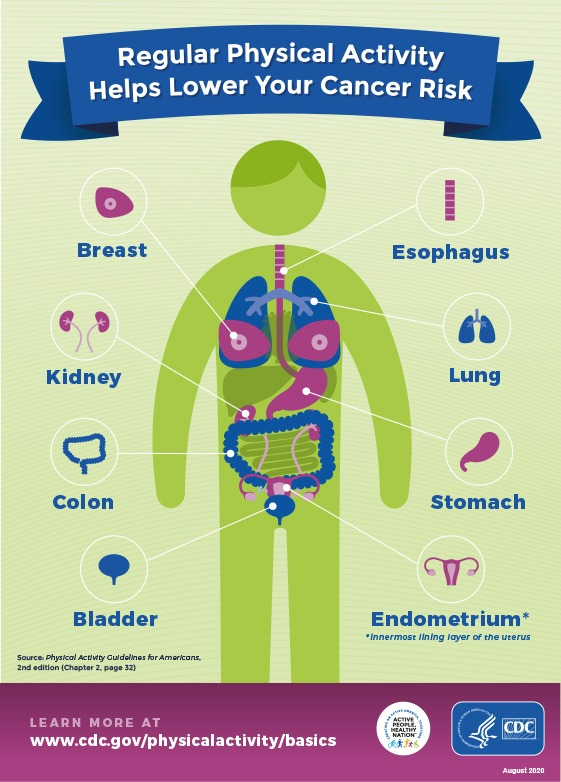

Fitness Tracking and Workout Plan

- If time is money, modern life is in debt, especially when it comes to finding time for the gym. But never fear: the full body workout is here. Doing exactly what you'd suspect, the full body workout combines a series of compound exercises (each targeting multiple muscle groups) to hit all the right spots in one session. Proponents of such a workout say this not only saves you precious time, but it can also help build consistent size and improve cardiovascular performance.
But is this more holistic regime the right choice for everyone, and how do you make the most of your full-body experience? Luckily, we have some expert personal trainers on speed dial to talk you through the pros and cons of the full body workout – and guide you towards the right workout plan.
- Benefits of Physical Activity
Immediate Benefits.
Weight Management.
Reduce Your Health risk.
Strengthen Your Bones and Muscles.
Improve Your Ability to do Daily Activities and Prevent Falls.
Increase Your Chances of Living Longer.
Manage Chronic Health Conditions & Disabilities.

- Exercising can lift your mood. It also allows you to stay fit physically. Gyms contribute a significant part in maintaining health.
Here are the advantages of joining a health club:
Professional Trainer:
One of the advantages of training in a fitness center is you’ll get assistance from a professional trainer. Many gyms offer several classes that suit your needs.
Workout at home can cause injuries if any exercise goes wrong. Trainers will help you to get into the right posture. Moreover, they motivate you to reach your health goals. You can consult your trainer for the diet and supplements you might need.
Maintaining a Healthy Lifestyle:
Physical activity can improve your health. Regular exercise offers long-term health benefits. More importantly, maintaining a routine can improve your quality of life.
Working out can help you to maintain a healthy lifestyle. It also leads to healthy eating habits.
Design Features
-
MyFitnessPal is basically a calorie counting app which comes with various features that make it easier for the user to create meal plans and take up exercises according to their height and weight requirements.
Barcode scan: Users can scan the barcode of food items and get a calorie count automatically.
Quick Add: Search for foods and exercises, and add them with one swipe to the routine.
Variety of Workout Options: You can find different exercises in the search results as well as through the categories on the app.
Regular Entry of Food: It’s easy to track what you eat for your three meals during the day.

Benefits of Fitness
- Regular physical activity is one of the most important things you can do for your health. Being physically active can improve your brain health, help manage weight, reduce the risk of disease, strengthen bones and muscles, and improve your ability to do everyday activities.
Adults who sit less and do any amount of moderate-to-vigorous physical activity gain some health benefits. Only a few lifestyle choices have as large an impact on your health as physical activity.
Everyone can experience the health benefits of physical activity – age, abilities, ethnicity, shape, or size do not matter.
Immediate Benefits
Some benefits of physical activity on brain health [PDF-14.4MB] happen right after a session of moderate-to-vigorous physical activity. Benefits include improved thinking or cognition for children 6 to 13 years of age and reduced short-term feelings of anxiety for adults. Regular physical activity can help keep your thinking, learning, and judgment skills sharp as you age. It can also reduce your risk of depression and anxiety and help you sleep better
.
|
|
|
|